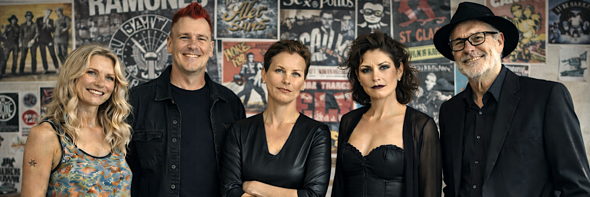

Alt – aber nicht artig.
Fünf Menschen jenseits der 50. Sie kennen sich seit dem letzten Jahrtausend. Jetzt wohnen sie zusammen in einer WG auf St. Pauli. Eine fortlaufende Serie übers gemeinsam Altwerden – statt allein zu vereinsamen. Komplett mit KI gemacht, komplett ohne Auftrag.
Jeden Samstag gegen Mittag erscheint eine neue Folge.
Silke, Petra, Kai, Beate und Frank haben eins gemeinsam: Sie haben zu viel erlebt, um noch brav zu werden. Jetzt wohnen sie zusammen – mit allem Reibungspotenzial, das fünf Sturköpfe so mitbringen.
Die Folgen bauen aufeinander auf. Am besten startest du beim Pilotfilm und arbeitest dich durch Staffel 1.
Eine neue Folge pro Woche – plus tägliche Kommentare der Bewohner auf Instagram und Facebook.
Geschrieben und produziert von einer Person, mit KI als Werkzeug. Genau das macht den eigenwilligen Look aus.
Ja, die Bewohner sehen in jeder Folge etwas anders aus. Mal jünger, manchmal älter. Das nennt sich "Figurendrift". Dafür haben sie fast immer die selben Klamotten an. Damit ihr sie trotzdem "erkennt". Das ist kein Versehen, das ist die Handschrift. WG St. Pauli zeigt offen, wie KI heute erzählt: faszinierend, unperfekt, ein bisschen unheimlich – wie das Leben jenseits der 50 eben auch.
Wer das einmal als Stil begreift, statt als Bug, schaut die Serie mit ganz anderen Augen. Versprochen.
Diese WG entsteht ohne Budget – aber nicht ohne dich.
Jede Folge ist unabhängig produziert. Wenn dir die WG Freude macht, unterstütze sie auf Steady – mit Goodies für dich und einem Platz auf der Gästeliste obendrauf.